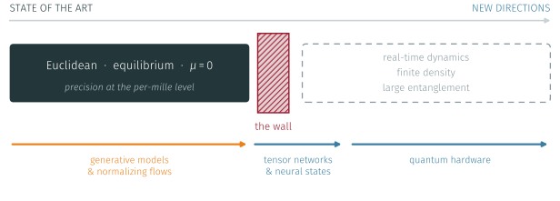

State of the Art & New Directions for
Lattice Gauge Theory and Quantum Simulation
Polo Fibonacci · Pisa · 30 September – 2 October 2026
University of Pisa
University of Pisa
University of Pisa
University of Pisa
Benvenuti a Pisa — and welcome to the first edition of StaND4LQ.
This workshop is organised entirely by PhD students of the University of Pisa.
No senior committee, no registration fee — just the meeting we wanted to attend.
Three days, eighteen talks, ten invited speakers, and one long discussion with no talks at all.
…and precisely because it is, we can see clearly where it stops.

The wall is not a technicality. It is a sign problem, an ill-posed analytic continuation, and a Hilbert space that grows exponentially.
What blocks us
Who is needed
None of these four problems belongs to a single community —
and that is the entire premise of this meeting.
Eighteen talks over three days.
6 · 5 · 7 across the three communities — and no single area more than a third of the programme. That was the point.
Claudio Bonanno
University of Bern
Pietro Butti
University of Southern Denmark
Elia Cellini
University of Edinburgh · Higgs Centre
Bipasha Chakraborty
University of Southampton
Pierpaolo Fontana
Universitat Autònoma de Barcelona
Giuseppe Gagliardi
INFN, Sezione di Roma Tre
Alessandro Nada
Università di Torino · INFN Torino
Giulia Piccitto
University of Catania
Simone Romiti
University of Bern
Matteo Wauters
University of Trento
Nine contributed talks from early-career researchers sit alongside them — by design, not as filler.
31
registered participants
18
talks in three days
5
countries represented
0
registration fee
Italy · United Kingdom · Switzerland · Denmark · Spain
For a first edition, assembled by four PhD students, we are quietly delighted.
Thursday 1 October · 12:10 – 13:30
An hour and twenty minutes with no speaker and no slides.
It is the only part of the programme we cannot prepare for you.
If you came here to find a collaborator rather than to give a talk,
this is the slot that matters.
Venue
Polo Fibonacci, Building A
Aula Magna, Dept. of Mathematics
Largo Bruno Pontecorvo 3, Pisa
Coffee breaks are offered by the organisation, just outside this room.
Social dinner
Ristorante La Grotta, Pisa
Thursday 1 October, 20:00
Anything at all — find any of the four of us, or write to
stand4lq_workshop@lists.infn.it
This workshop is supported by the University of Pisa and INFN, Sezione di Pisa — which is why nobody paid to walk through the door.
Thanks to our invited speakers for agreeing to come to a workshop that did not yet exist, and to everyone who submitted an abstract.
One request · the people in this room work on Euclidean Monte Carlo, on tensor networks, and on quantum hardware. Sit next to someone whose methods you do not use.
StaND4LQ · Pisa · 30 September – 2 October 2026